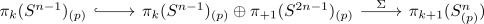
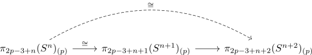

freudenthal map is some p-local isomorphism
Proposition
Let $n\geq 3$
Then the freudenthal map
is p-locally an isomorphism
Proof
$p = 2$
follows from freudenthal suspension theorem for a sphere (todo: degrees)
$n$ odd, $p$ odd
Then the split EHP sequence for an even sphere implies that the map is injective: it is part of
so in particular

Therefore it is an isomorphism since both sides are $\mathbb{F}_p$ - so in particular finite sets
$n+1$ even, $p$ odd
Using two out of three for isomorphisms we want to show that the dashed map is an isomorphism

since we have shown above that the first map is an isomorphism.
So we want to understand the homology $\Omega^{2}S^{n+2}$ and we claim
(cf. some p-local homology of the double loop space of the odd sphere)
Now using homotopy excision for anima & p-local hurewicz (or homological serre spectral sequence) we get that $S^n \rightarrow \Omega^2 S^{n+2}$ is p-locally $p(n-1)-2$ connected map since $2p - 3 + n < p(n+1) - 2$ so